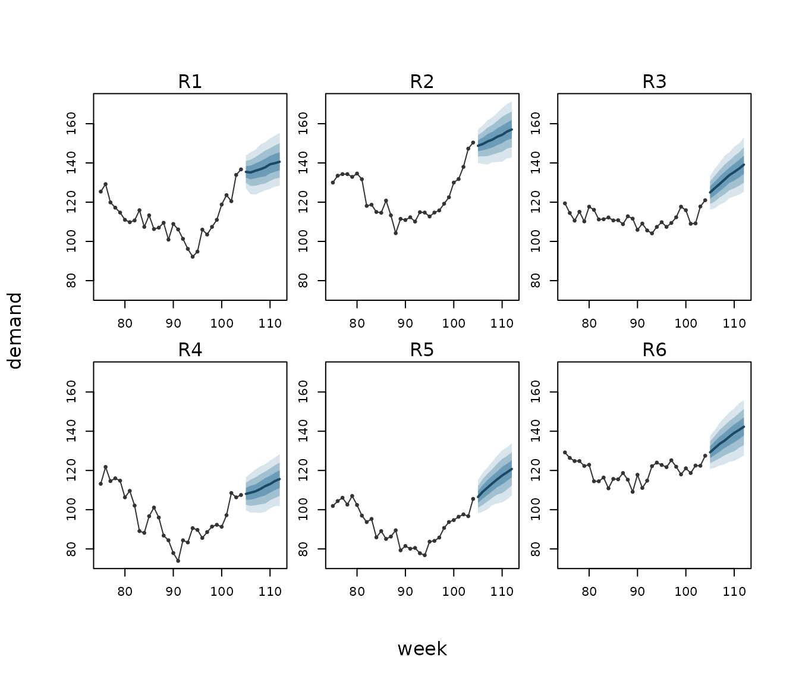

This vignette forecasts several series at once: the rows a forecast needs, a model whose forecasts carry each series on from where its data end, a covariate whose future is not known, fan charts, and totals across series and over the horizon. Along the way, a check on the model’s trend finds something to change, and the change is made.
The data
Six regions report their weekly demand for two years. Demand rises with the temperature, grows slowly over time, and each region has runs of high and low weeks. The temperature follows the seasons, with runs of warm and cool weeks of its own.
set.seed(2026)
n_regions <- 6; n_weeks <- 104
demand <- expand.grid(week = 1:n_weeks, region = factor(sprintf("R%d", 1:n_regions)))
runs <- function(phi, sd) unlist(lapply(1:n_regions, function(r)
as.numeric(stats::arima.sim(list(ar = phi), n_weeks, sd = sd))))
demand$temp <- round(15 + 8 * sin(2 * pi * demand$week / 52) + runs(0.7, 1.5), 1)
region_effect <- rnorm(n_regions, 0, 10)
demand$demand <- round(100 + 0.15 * demand$week + 2 * (demand$temp - 15) +
region_effect[demand$region] + runs(0.8, 2) +
rnorm(nrow(demand), 0, 2), 1)The rows a forecast needs
ilm_future() builds the next weeks of every region. It
copies what does not change over time and leaves what does, the
temperature, for you to fill in:
future <- ilm_future(demand, time = "week", group = "region", h = 8, response = "demand")
#> These columns vary over time, so their future values are not known: temp. They are left missing: fill them in with the values the forecast should assume.
head(future, 3)
#> week region temp demand horizon
#> 1 105 R1 NA NA 1
#> 2 106 R1 NA NA 2
#> 3 107 R1 NA NA 3For a start, fill in a scenario: the temperature’s seasonal average, with no warm or cool runs.
A first model, and the trend check
A first model has the temperature, a linear trend in time, a level
for each region, and a first-order autoregressive term,
ilm_ar1(), for each region’s runs of weeks. Forecasting
with it warns:
fit_ar1 <- illume::ilm_model(demand ~ temp + week + (1 | region), data = demand,
family = "gaussian", ar = illume::ilm_ar1(~ week | region),
verbose = FALSE)
fc_ar1 <- ilm_forecast(fit_ar1, scenario, nsim = 500)
#> Warning: The model trends in `week` (week). Forecasts past the data assume that
#> the trend's slope does not change (the reference), so their intervals leave out
#> any change in it (limn's own reasoning). Reference: Hyndman and Athanasopoulos
#> (2021), Forecasting: Principles and Practice, 3rd edition, section 10.4. For
#> longer horizons a stochastic trend is safer (the reference): a random walk, ar
#> = ilm_rw1(~ week | region), lets the level move, and the intervals widen with
#> the horizon (in place of the model's ar1 term: a model has one correlation over
#> time).A trend in the fixed part assumes the growth goes on at the same
rate, and, in limn’s own reasoning, its intervals then leave out any
change in that rate. The warning names the remedy, citing Hyndman and
Athanasopoulos (2021, section 10.4) for a stochastic trend being safer
at longer horizons: a random walk, ilm_rw1(), which lets
each region’s level move. Refit with it in place of the autoregressive
term, and forecast again:
fit <- illume::ilm_model(demand ~ temp + week + (1 | region), data = demand,
family = "gaussian", ar = illume::ilm_rw1(~ week | region),
verbose = FALSE)
fc_scenario <- ilm_forecast(fit, scenario, nsim = 500)No warning now. The width of region R1’s 90% interval at each horizon shows the difference:
width_r1 <- function(fc) {
a <- as.data.frame(fc)
a <- a[a$region == "R1", ]
setNames(round(a$upper_0.9 - a$lower_0.9, 1), paste0("h", a$horizon))
}
rbind(ar1 = width_r1(fc_ar1), rw1 = width_r1(fc_scenario))
#> h1 h2 h3 h4 h5 h6 h7 h8
#> ar1 10.0 11.4 11.7 12.5 12.5 12.6 12.4 12.5
#> rw1 10.4 11.8 12.8 13.9 14.9 15.6 16.5 17.5For region R1, under the autoregressive term the intervals stop widening after a few weeks; under the random walk they go on widening with the horizon. The rest of this vignette uses the random-walk model.
A covariate whose future is not known
The scenario fixed next weeks’ temperatures, so its intervals leave
out the uncertainty in them. Hyndman and Athanasopoulos (2021, section
10.3) note that prediction intervals made that way “do not take into
account the uncertainty in the forecasts of the predictors”.
ilm_covariate_paths() draws the temperature’s future from a
model of the temperature, one path per draw, and the forecast mixes over
the paths:
fit_temp <- illume::ilm_model(temp ~ illume::ilm_fourier(week, period = 52), data = demand,
family = "gaussian", ar = illume::ilm_ar1(~ week | region),
verbose = FALSE)
paths <- ilm_covariate_paths(fit_temp, future, nsim = 500)
fc <- ilm_forecast(fit, paths, nsim = 500)
rbind(scenario = width_r1(fc_scenario), paths = width_r1(fc))
#> h1 h2 h3 h4 h5 h6 h7 h8
#> scenario 10.4 11.8 12.8 13.9 14.9 15.6 16.5 17.5
#> paths 14.2 17.5 19.0 20.3 21.0 21.4 21.7 22.7The temperature model has the seasons, as a Fourier term, and each
region’s runs of warm and cool weeks. With the temperature drawn, region
R1’s intervals are wider at every horizon. In limn’s own study of
covariates given as draws
(studies/findings/covariate_draws.md in limn’s GitHub
repository, https://github.com/huttoncp/limn/blob/main/studies/findings/covariate_draws.md),
90% intervals for a gaussian outcome made with the covariate’s point
forecast covered only 0.75 to 0.83, against about 0.90 with the
covariate given as draws.
Paths from another tool
Paths made elsewhere, such as a weather service’s ensemble, come in
through ilm_as_draws(). Here a made-up ensemble of 20 paths
stands in for one: a data frame with a row per path, region and
week.
ensemble <- do.call(rbind, lapply(1:20, function(k) {
e <- future[c("region", "week")]
e$temp <- round(15 + 8 * sin(2 * pi * e$week / 52) + rnorm(nrow(e), 0, 2), 1)
e$.rep <- k
e
}))
from_ensemble <- ilm_as_draws(ensemble, future, by = c("region", "week"))
head(as.data.frame(ilm_forecast(fit, from_ensemble, nsim = 500)), 3)
#> week region temp demand horizon new_level estimate mean lower_0.9
#> 1 105 R1 NA NA 1 FALSE 126.4614 126.5183 117.4291
#> 2 106 R1 NA NA 2 FALSE 129.1513 128.4540 118.0526
#> 3 107 R1 NA NA 3 FALSE 131.9113 131.7833 122.3101
#> upper_0.9
#> 1 135.7713
#> 2 137.2667
#> 3 141.0980The fan chart
ilm_plot_fan(fc, time = "week", group = "region",
history = demand[demand$week > 74, ], response = "demand")
Each panel is one region: its last 30 weeks of demand, then the forecast’s median as a line, with its central 50%, 80% and 95% intervals as bands. Each region starts from its own last weeks, and the bands widen with the horizon.
Totals
The total over regions is not the sum of the regions’ intervals.
ilm_aggregate() adds the forecasts draw by draw, so what
the regions share within a draw, the parameters of the demand model and
of the temperature model, carries into the total. The total demand each
week:
as.data.frame(ilm_aggregate(fc, by = "week"))
#> week n_rows estimate mean lower_0.9 upper_0.9
#> 1 105 6 752.7767 752.8986 735.5029 770.4155
#> 2 106 6 761.4285 760.9168 739.5225 780.1459
#> 3 107 6 770.1843 770.2665 747.9340 792.7353
#> 4 108 6 779.2362 779.5880 754.9276 804.6146
#> 5 109 6 788.9138 789.1754 762.8718 815.5906
#> 6 110 6 797.8804 798.1998 770.3953 825.9959
#> 7 111 6 807.4376 807.1211 777.5517 834.7061
#> 8 112 6 815.9679 815.7236 785.8711 845.1298And each region’s total over the eight weeks, where a region’s own path carries into its total:
as.data.frame(ilm_aggregate(fc, by = "region"))
#> region n_rows estimate mean lower_0.9 upper_0.9
#> 1 R1 8 1100.5383 1101.4429 1043.3173 1162.3366
#> 2 R2 8 1221.5007 1222.0706 1157.4849 1283.8569
#> 3 R3 8 1059.1276 1058.0628 1000.2730 1114.7952
#> 4 R4 8 892.8681 891.2049 831.6517 946.3042
#> 5 R5 8 913.2609 912.9567 855.7816 968.1929
#> 6 R6 8 1089.0415 1088.1520 1025.8223 1147.7706Both sets of totals come from the same draws, so the regions’ expected totals sum to exactly the same grand total as the weeks’ do:
c(by_week = sum(as.data.frame(ilm_aggregate(fc, by = "week"))$mean),
by_region = sum(as.data.frame(ilm_aggregate(fc, by = "region"))$mean))
#> by_week by_region
#> 6273.89 6273.89Where next
-
?ilm_forecastand?ilm_predict(its section Over time) for how a series is carried forward. -
?ilm_covariate_pathsand?ilm_as_drawsfor covariates given as draws. -
?ilm_aggregatefor totals and averages. -
vignette("limn")for scoring and comparing forecasts.
References
Hyndman, R. J. and Athanasopoulos, G. (2021). Forecasting: Principles and Practice, 3rd edition. OTexts. Section 10.3, “Forecasting”, and section 10.4, “Stochastic and deterministic trends” (online edition, https://otexts.com/fpp3/, read 21 October 2026).